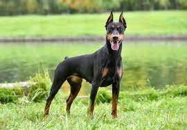

Overview
Sleek and powerful, possessing both a magnificent physique and keen intelligence, the Doberman Pinscher is one of dogkind's noblemen. This incomparably fearless and vigilant breed stands proudly among the world's finest protection dogs. Dobermans are compactly built dogs'¿muscular, fast, and powerful'¿standing between 24 to 28 inches at the shoulder. The body is sleek but substantial, and is covered with a glistening coat of black, blue, red, or fawn, with rust markings. These elegant qualities, combined with a noble wedge-shaped head and an easy, athletic way of moving, have earned Dobermans a reputation as royalty in the canine kingdom. A well-conditioned Doberman on patrol will deter all but the most foolish intruder.The Doberman Pinscher (Doberman) is a powerful and muscular member of the Working Group developed for police and military work and to be a protector and companion in the home. The breed originated in Germany and quickly gained popularity in other countries for its courage, intelligence, and loyalty.
Characteristics
- powerful, energetic dogs that need lots of exercise.
- They can adjust well to apartment living if exercised daily.
- Careful socialization and obedience training from a young age are essential for this breed.
- imposing appearance and protective instincts.
Care
Brush her coat as needed, at least weekly. Doberman Pinschers generally have good teeth, and you can keep them perfect by brushing them at least twice a week! She is a sensitive dog and doesn't do well with harsh training methods or punishment; always end training on a positive note.With the right training, they can be very calm and well-tempered dogs, although their large size means they probably aren't the best breed for families with young children or first-time owners. Dobermanns are very energetic and will need plenty of mental and physical exercise to keep them happy and healthy.